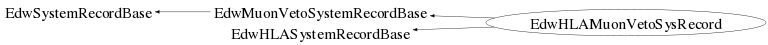

class EdwHLAMuonVetoSysRecord: public EdwMuonVetoSystemRecordBase, public EdwHLASystemRecordBase
EdwHLAMuonVetoSysRecord.cc EdwDataStructure Author: Adam Cox <mailto:adam.cox@ik.fzk.de> on 3/25/10. * Copyright 2010 Karlsruhe Institute of Technology. All rights reserved. There are not any member variables in this System Record. All Muon Veto System record values are stored in the base class EdwMuonVetoSystemRecordBase.
Function Members (Methods)
public:
private:
| void | CopyLocalMembers(const EdwHLAMuonVetoSysRecord& aSysRec) |
| void | InitializeMembers() |
Class Charts
{kind=link}
{kind=link}
{kind=link}
{kind=link}

Function documentation
EdwHLAMuonVetoSysRecord(const EdwHLAMuonVetoSysRecord& aSysRec)
EdwHLAMuonVetoSysRecord(const EdwHLAMuonVetoSysRecord& aSysRec)
EdwHLAMuonVetoSysRecord& operator=(const EdwHLAMuonVetoSysRecord& aSysRec)
Bool_t IsSame(const EdwHLAMuonVetoSysRecord& aRec, Bool_t bPrint = false) const
Compares two objects and their member variables to test for equality. If bPrint is set to true, then a message for each member variable that is different will print to standard out. Otherwise, this method will return false and quit checking member variables as soon as it finds a unequal data member.
void Compact(void)
make the event class as small as possible. this calls 'Compact' for all member variables that are EdwDS classes, member variables that can be compacted (such as TBits) and base classes